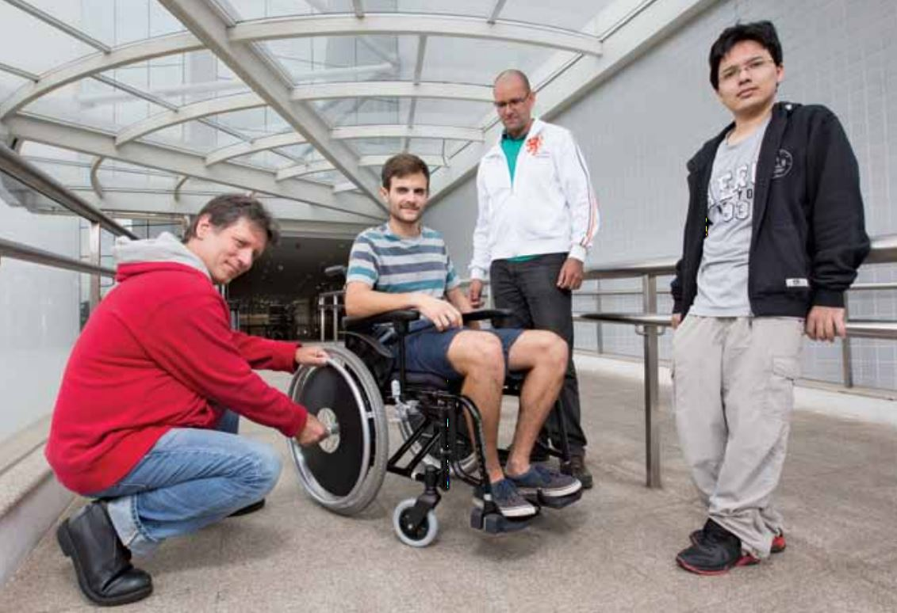
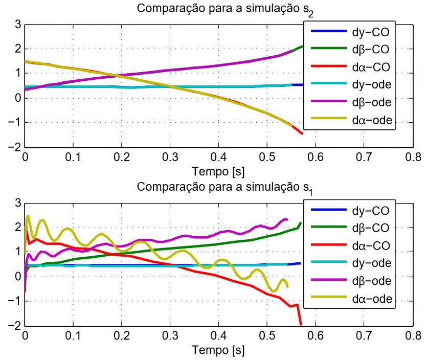

- 


- 
Bem Vindo a página do grupo do Núcleo de Tecnologia Assistiva do Centro Universitário da FEI.
Este grupo de pesquisa está sob coordenação dos professores Doutor Marko Ackermann e Fabrizio Leonardi. Começou em 2013 e teve apoio de fomento do Ministério da Ciência, Tecnologia e Inovação (MCTI) através do Conselho Nacional de Desenvolvimento Científico e Tecnológico (CNPq). As pesquisas na área também permitiram à FEI a formação do seu Núcleo de Tecnologia Assistiva (NTA) aprovado pelo Ministério da Ciência, Tecnologia e Inovação para fazer parte de um seleto grupo de pesquisadores na área. Nossa pesquisa atualmente se concentra em três áreas:
Copyright © 2017 - All Rights Reserved - Núcleo de Tecnologia Assistiva da FEI
Template by OS Templates